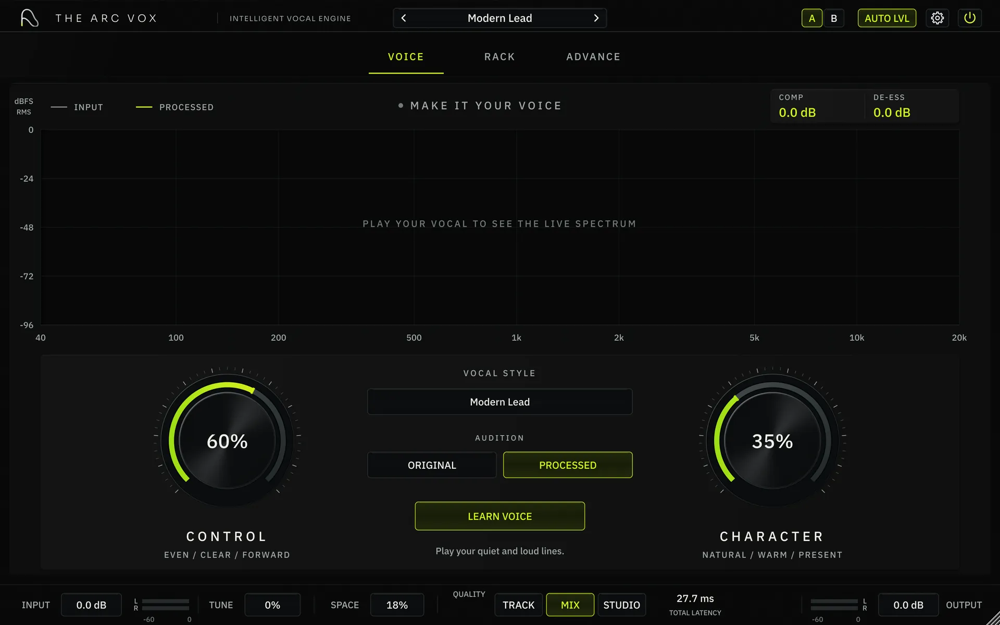
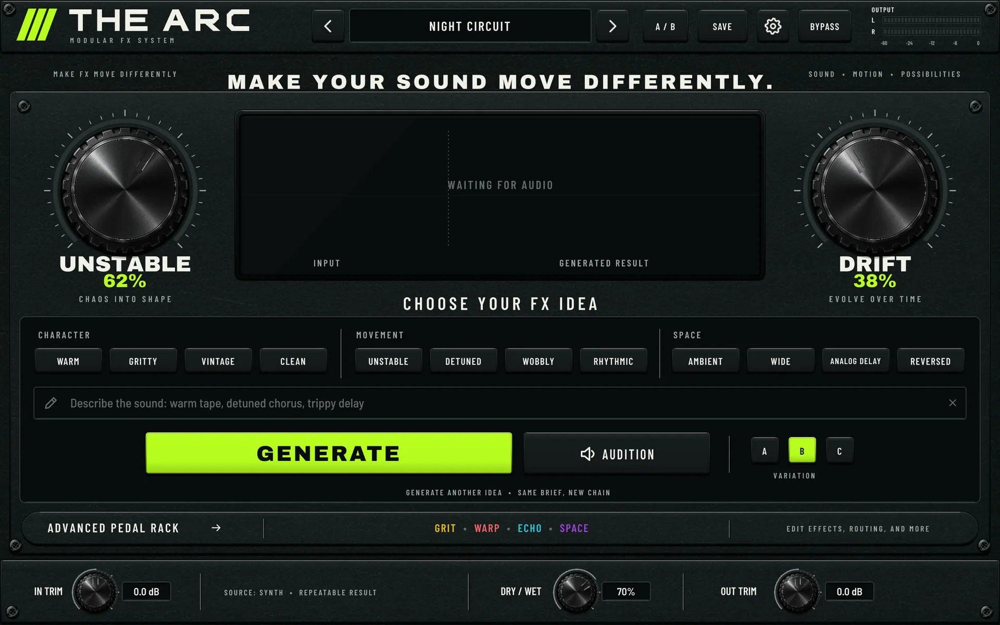

Tools that keep the engineering out of your way.
Stay on the song.
Arc Vox handles the vocal chain. Arc Fx turns familiar sounds into parts that belong to your record.
[ 01 ] Arc Vox + Arc Fx
Less engineering between you and the record.
01 · Vocal production · launching soon
Arc Vox handles the vocal chain.

02 · Modular effects · early access
Quit using the sound exactly as you found it.

[ 02 ] Inside
Start fast. Open it up when you want control.
Both plugins put the useful move first, then open into editable racks when you want to make every decision yourself.
The motion on this site runs on a demo signal.Audio examples are in progress.
01 / Stay musical
Get to a useful move quickly.Start with the result you want to hear, not a page of setup.
02 / Keep control
Go deeper when it matters.Open the rack, change the order, and make the calls yourself.
03 / Know the move
No mystery processing.The chain stays visible, editable, and honest about what it changes.
Early access
Put it on your next record.
Join once for Arc Vox, Arc Fx, early builds, and launch pricing.